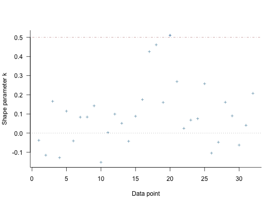

For models fit using MCMC, compute approximate leave-one-out cross-validation
(LOO, LOOIC) or, less preferably, the Widely Applicable Information Criterion
(WAIC) using the loo package. Exact \(K\)-fold
cross-validation is also available. Compare two or more models using the
compare_models function. Note: these functions are not
guaranteed to work properly unless the data argument was specified
when the model was fit.
# S3 method for stanreg loo(x, ..., k_threshold = NULL) # S3 method for stanreg waic(x, ...) kfold(x, K = 10, save_fits = FALSE) compare_models(..., loos = list())
| x | A fitted model object returned by one of the
rstanarm modeling functions. See |
|---|---|
| ... | For the |
| k_threshold | Threshold for flagging estimates of the Pareto shape
parameters \(k\) estimated by |
| K | For |
| save_fits | If |
| loos | For |
The loo and waic methods return an object of class
'loo'. See the Value section in loo and
waic (from the loo package) for details on the
structure of these objects.
kfold returns an object with has classes 'kfold' and 'loo'
that has a similar structure as the objects returned by the loo and
waic methods.
compare_models returns a vector or matrix with class
'compare.loo'. See the Comparing models section below for more
details.
The loo method for stanreg objects
provides an interface to the loo package for
approximate leave-one-out cross-validation (LOO). The LOO Information
Criterion (LOOIC) has the same purpose as the Akaike Information Criterion
(AIC) that is used by frequentists. Both are intended to estimate the
expected log predictive density (ELPD) for a new dataset. However, the AIC
ignores priors and assumes that the posterior distribution is multivariate
normal, whereas the functions from the loo package do not make this
distributional assumption and integrate over uncertainty in the parameters.
This only assumes that any one observation can be omitted without having a
major effect on the posterior distribution, which can be judged using the
diagnostic plot provided by the plot.loo method and the
warnings provided by the print.loo method (see the
How to Use the rstanarm Package vignette for an example of this
process).
loo gives warnings (k_threshold)k_threshold argument to the loo method for rstanarm
models is provided as a possible remedy when the diagnostics reveal
problems stemming from the posterior's sensitivity to particular
observations. Warnings about Pareto \(k\) estimates indicate observations
for which the approximation to LOO is problematic (this is described in
detail in Vehtari, Gelman, and Gabry (2017) and the
loo package documentation). The
k_threshold argument can be used to set the \(k\) value above
which an observation is flagged. If k_threshold is not NULL
and there are \(J\) observations with \(k\) estimates above
k_threshold then when loo is called it will refit the
original model \(J\) times, each time leaving out one of the \(J\)
problematic observations. The pointwise contributions of these observations
to the total ELPD are then computed directly and substituted for the
previous estimates from these \(J\) observations that are stored in the
object created by loo.
Note: in the warning messages issued by loo about large
Pareto \(k\) estimates we recommend setting k_threshold to at
least \(0.7\). There is a theoretical reason, explained in Vehtari,
Gelman, and Gabry (2017), for setting the threshold to the stricter value
of \(0.5\), but in practice they find that errors in the LOO
approximation start to increase non-negligibly when \(k > 0.7\).
The kfold function performs exact \(K\)-fold
cross-validation. First the data are randomly partitioned into \(K\)
subsets of equal (or as close to equal as possible) size. Then the model is
refit \(K\) times, each time leaving out one of the K subsets. If
\(K\) is equal to the total number of observations in the data then
\(K\)-fold cross-validation is equivalent to exact leave-one-out
cross-validation (to which loo is an efficient approximation). The
compare_models function is also compatible with the objects returned
by kfold.
compare_models is a wrapper around the
compare function in the loo package. Before
calling compare, compare_models performs some extra checks to
make sure the rstanarm models are suitable for comparison. These
extra checks include verifying that all models to be compared were fit
using the same outcome variable and likelihood family.
If exactly two models are being compared then compare_models returns
a vector containing the difference in expected log predictive density
(ELPD) between the models and the standard error of that difference (the
documentation for compare has additional details about
the calculation of the standard error of the difference). The difference in
ELPD will be negative if the expected out-of-sample predictive accuracy of
the first model is higher. If the difference is be positive then the second
model is preferred.
If more than two models are being compared then compare_models
returns a matrix with one row per model. This matrix summarizes the objects
and arranges them in descending order according to expected out-of-sample
predictive accuracy. That is, the first row of the matrix will be
for the model with the largest ELPD (smallest LOOIC).
Vehtari, A., Gelman, A., and Gabry, J. (2017). Practical Bayesian model evaluation using leave-one-out cross-validation and WAIC. Statistics and Computing. 27(5), 1413--1432. doi:10.1007/s11222-016-9696-4. arXiv preprint: http://arxiv.org/abs/1507.04544/
The various rstanarm vignettes for more examples of
using loo and compare_models.
loo-package (in particular the PSIS-LOO
section) for details on the computations implemented by the loo
package and the interpretation of the Pareto \(k\) estimates displayed
when using the plot.loo method.
log_lik.stanreg to directly access the pointwise
log-likelihood matrix.
#>#> #> SAMPLING FOR MODEL 'continuous' NOW (CHAIN 1). #> #> Gradient evaluation took 2.1e-05 seconds #> 1000 transitions using 10 leapfrog steps per transition would take 0.21 seconds. #> Adjust your expectations accordingly! #> #> #> Iteration: 1 / 2000 [ 0%] (Warmup) #> Iteration: 200 / 2000 [ 10%] (Warmup) #> Iteration: 400 / 2000 [ 20%] (Warmup) #> Iteration: 600 / 2000 [ 30%] (Warmup) #> Iteration: 800 / 2000 [ 40%] (Warmup) #> Iteration: 1000 / 2000 [ 50%] (Warmup) #> Iteration: 1001 / 2000 [ 50%] (Sampling) #> Iteration: 1200 / 2000 [ 60%] (Sampling) #> Iteration: 1400 / 2000 [ 70%] (Sampling) #> Iteration: 1600 / 2000 [ 80%] (Sampling) #> Iteration: 1800 / 2000 [ 90%] (Sampling) #> Iteration: 2000 / 2000 [100%] (Sampling) #> #> Elapsed Time: 0.067342 seconds (Warm-up) #> 0.050406 seconds (Sampling) #> 0.117748 seconds (Total) #> #> #> SAMPLING FOR MODEL 'continuous' NOW (CHAIN 2). #> #> Gradient evaluation took 1.5e-05 seconds #> 1000 transitions using 10 leapfrog steps per transition would take 0.15 seconds. #> Adjust your expectations accordingly! #> #> #> Iteration: 1 / 2000 [ 0%] (Warmup) #> Iteration: 200 / 2000 [ 10%] (Warmup) #> Iteration: 400 / 2000 [ 20%] (Warmup) #> Iteration: 600 / 2000 [ 30%] (Warmup) #> Iteration: 800 / 2000 [ 40%] (Warmup) #> Iteration: 1000 / 2000 [ 50%] (Warmup) #> Iteration: 1001 / 2000 [ 50%] (Sampling) #> Iteration: 1200 / 2000 [ 60%] (Sampling) #> Iteration: 1400 / 2000 [ 70%] (Sampling) #> Iteration: 1600 / 2000 [ 80%] (Sampling) #> Iteration: 1800 / 2000 [ 90%] (Sampling) #> Iteration: 2000 / 2000 [100%] (Sampling) #> #> Elapsed Time: 0.062533 seconds (Warm-up) #> 0.046544 seconds (Sampling) #> 0.109077 seconds (Total) #> #> #> SAMPLING FOR MODEL 'continuous' NOW (CHAIN 3). #> #> Gradient evaluation took 1.5e-05 seconds #> 1000 transitions using 10 leapfrog steps per transition would take 0.15 seconds. #> Adjust your expectations accordingly! #> #> #> Iteration: 1 / 2000 [ 0%] (Warmup) #> Iteration: 200 / 2000 [ 10%] (Warmup) #> Iteration: 400 / 2000 [ 20%] (Warmup) #> Iteration: 600 / 2000 [ 30%] (Warmup) #> Iteration: 800 / 2000 [ 40%] (Warmup) #> Iteration: 1000 / 2000 [ 50%] (Warmup) #> Iteration: 1001 / 2000 [ 50%] (Sampling) #> Iteration: 1200 / 2000 [ 60%] (Sampling) #> Iteration: 1400 / 2000 [ 70%] (Sampling) #> Iteration: 1600 / 2000 [ 80%] (Sampling) #> Iteration: 1800 / 2000 [ 90%] (Sampling) #> Iteration: 2000 / 2000 [100%] (Sampling) #> #> Elapsed Time: 0.054925 seconds (Warm-up) #> 0.055306 seconds (Sampling) #> 0.110231 seconds (Total) #> #> #> SAMPLING FOR MODEL 'continuous' NOW (CHAIN 4). #> #> Gradient evaluation took 1.5e-05 seconds #> 1000 transitions using 10 leapfrog steps per transition would take 0.15 seconds. #> Adjust your expectations accordingly! #> #> #> Iteration: 1 / 2000 [ 0%] (Warmup) #> Iteration: 200 / 2000 [ 10%] (Warmup) #> Iteration: 400 / 2000 [ 20%] (Warmup) #> Iteration: 600 / 2000 [ 30%] (Warmup) #> Iteration: 800 / 2000 [ 40%] (Warmup) #> Iteration: 1000 / 2000 [ 50%] (Warmup) #> Iteration: 1001 / 2000 [ 50%] (Sampling) #> Iteration: 1200 / 2000 [ 60%] (Sampling) #> Iteration: 1400 / 2000 [ 70%] (Sampling) #> Iteration: 1600 / 2000 [ 80%] (Sampling) #> Iteration: 1800 / 2000 [ 90%] (Sampling) #> Iteration: 2000 / 2000 [100%] (Sampling) #> #> Elapsed Time: 0.063901 seconds (Warm-up) #> 0.053388 seconds (Sampling) #> 0.117289 seconds (Total) #>#>#> #> SAMPLING FOR MODEL 'continuous' NOW (CHAIN 1). #> #> Gradient evaluation took 2.1e-05 seconds #> 1000 transitions using 10 leapfrog steps per transition would take 0.21 seconds. #> Adjust your expectations accordingly! #> #> #> Iteration: 1 / 2000 [ 0%] (Warmup) #> Iteration: 200 / 2000 [ 10%] (Warmup) #> Iteration: 400 / 2000 [ 20%] (Warmup) #> Iteration: 600 / 2000 [ 30%] (Warmup) #> Iteration: 800 / 2000 [ 40%] (Warmup) #> Iteration: 1000 / 2000 [ 50%] (Warmup) #> Iteration: 1001 / 2000 [ 50%] (Sampling) #> Iteration: 1200 / 2000 [ 60%] (Sampling) #> Iteration: 1400 / 2000 [ 70%] (Sampling) #> Iteration: 1600 / 2000 [ 80%] (Sampling) #> Iteration: 1800 / 2000 [ 90%] (Sampling) #> Iteration: 2000 / 2000 [100%] (Sampling) #> #> Elapsed Time: 0.091543 seconds (Warm-up) #> 0.094908 seconds (Sampling) #> 0.186451 seconds (Total) #> #> #> SAMPLING FOR MODEL 'continuous' NOW (CHAIN 2). #> #> Gradient evaluation took 1.5e-05 seconds #> 1000 transitions using 10 leapfrog steps per transition would take 0.15 seconds. #> Adjust your expectations accordingly! #> #> #> Iteration: 1 / 2000 [ 0%] (Warmup) #> Iteration: 200 / 2000 [ 10%] (Warmup) #> Iteration: 400 / 2000 [ 20%] (Warmup) #> Iteration: 600 / 2000 [ 30%] (Warmup) #> Iteration: 800 / 2000 [ 40%] (Warmup) #> Iteration: 1000 / 2000 [ 50%] (Warmup) #> Iteration: 1001 / 2000 [ 50%] (Sampling) #> Iteration: 1200 / 2000 [ 60%] (Sampling) #> Iteration: 1400 / 2000 [ 70%] (Sampling) #> Iteration: 1600 / 2000 [ 80%] (Sampling) #> Iteration: 1800 / 2000 [ 90%] (Sampling) #> Iteration: 2000 / 2000 [100%] (Sampling) #> #> Elapsed Time: 0.09127 seconds (Warm-up) #> 0.081819 seconds (Sampling) #> 0.173089 seconds (Total) #> #> #> SAMPLING FOR MODEL 'continuous' NOW (CHAIN 3). #> #> Gradient evaluation took 1.6e-05 seconds #> 1000 transitions using 10 leapfrog steps per transition would take 0.16 seconds. #> Adjust your expectations accordingly! #> #> #> Iteration: 1 / 2000 [ 0%] (Warmup) #> Iteration: 200 / 2000 [ 10%] (Warmup) #> Iteration: 400 / 2000 [ 20%] (Warmup) #> Iteration: 600 / 2000 [ 30%] (Warmup) #> Iteration: 800 / 2000 [ 40%] (Warmup) #> Iteration: 1000 / 2000 [ 50%] (Warmup) #> Iteration: 1001 / 2000 [ 50%] (Sampling) #> Iteration: 1200 / 2000 [ 60%] (Sampling) #> Iteration: 1400 / 2000 [ 70%] (Sampling) #> Iteration: 1600 / 2000 [ 80%] (Sampling) #> Iteration: 1800 / 2000 [ 90%] (Sampling) #> Iteration: 2000 / 2000 [100%] (Sampling) #> #> Elapsed Time: 0.091285 seconds (Warm-up) #> 0.085309 seconds (Sampling) #> 0.176594 seconds (Total) #> #> #> SAMPLING FOR MODEL 'continuous' NOW (CHAIN 4). #> #> Gradient evaluation took 2.3e-05 seconds #> 1000 transitions using 10 leapfrog steps per transition would take 0.23 seconds. #> Adjust your expectations accordingly! #> #> #> Iteration: 1 / 2000 [ 0%] (Warmup) #> Iteration: 200 / 2000 [ 10%] (Warmup) #> Iteration: 400 / 2000 [ 20%] (Warmup) #> Iteration: 600 / 2000 [ 30%] (Warmup) #> Iteration: 800 / 2000 [ 40%] (Warmup) #> Iteration: 1000 / 2000 [ 50%] (Warmup) #> Iteration: 1001 / 2000 [ 50%] (Sampling) #> Iteration: 1200 / 2000 [ 60%] (Sampling) #> Iteration: 1400 / 2000 [ 70%] (Sampling) #> Iteration: 1600 / 2000 [ 80%] (Sampling) #> Iteration: 1800 / 2000 [ 90%] (Sampling) #> Iteration: 2000 / 2000 [100%] (Sampling) #> #> Elapsed Time: 0.103043 seconds (Warm-up) #> 0.083775 seconds (Sampling) #> 0.186818 seconds (Total) #># compare on LOOIC (loo1 <- loo(fit1, cores = 2))#> Computed from 4000 by 32 log-likelihood matrix #> #> Estimate SE #> elpd_loo -83.5 4.2 #> p_loo 3.2 1.1 #> looic 167.0 8.3 #> #> All Pareto k estimates are good (k < 0.5) #> See help('pareto-k-diagnostic') for details.loo2 <- loo(fit2, cores = 2) plot(loo2)# when comparing exactly two models, the reported 'elpd_diff' will be # positive if the expected predictive accuracy for the second model is higher compare_models(loo1, loo2) # or compare_models(loos = list(loo1, loo2))#> elpd_diff se #> 5.0 2.7# when comparing three or more models they are ordered by expected # predictive accuracy fit3 <- stan_glm(mpg ~ ., data = mtcars)#>#> #> SAMPLING FOR MODEL 'continuous' NOW (CHAIN 1). #> #> Gradient evaluation took 3e-05 seconds #> 1000 transitions using 10 leapfrog steps per transition would take 0.3 seconds. #> Adjust your expectations accordingly! #> #> #> Iteration: 1 / 2000 [ 0%] (Warmup) #> Iteration: 200 / 2000 [ 10%] (Warmup) #> Iteration: 400 / 2000 [ 20%] (Warmup) #> Iteration: 600 / 2000 [ 30%] (Warmup) #> Iteration: 800 / 2000 [ 40%] (Warmup) #> Iteration: 1000 / 2000 [ 50%] (Warmup) #> Iteration: 1001 / 2000 [ 50%] (Sampling) #> Iteration: 1200 / 2000 [ 60%] (Sampling) #> Iteration: 1400 / 2000 [ 70%] (Sampling) #> Iteration: 1600 / 2000 [ 80%] (Sampling) #> Iteration: 1800 / 2000 [ 90%] (Sampling) #> Iteration: 2000 / 2000 [100%] (Sampling) #> #> Elapsed Time: 0.501348 seconds (Warm-up) #> 0.478613 seconds (Sampling) #> 0.979961 seconds (Total) #> #> #> SAMPLING FOR MODEL 'continuous' NOW (CHAIN 2). #> #> Gradient evaluation took 1.7e-05 seconds #> 1000 transitions using 10 leapfrog steps per transition would take 0.17 seconds. #> Adjust your expectations accordingly! #> #> #> Iteration: 1 / 2000 [ 0%] (Warmup) #> Iteration: 200 / 2000 [ 10%] (Warmup) #> Iteration: 400 / 2000 [ 20%] (Warmup) #> Iteration: 600 / 2000 [ 30%] (Warmup) #> Iteration: 800 / 2000 [ 40%] (Warmup) #> Iteration: 1000 / 2000 [ 50%] (Warmup) #> Iteration: 1001 / 2000 [ 50%] (Sampling) #> Iteration: 1200 / 2000 [ 60%] (Sampling) #> Iteration: 1400 / 2000 [ 70%] (Sampling) #> Iteration: 1600 / 2000 [ 80%] (Sampling) #> Iteration: 1800 / 2000 [ 90%] (Sampling) #> Iteration: 2000 / 2000 [100%] (Sampling) #> #> Elapsed Time: 0.473685 seconds (Warm-up) #> 0.317758 seconds (Sampling) #> 0.791443 seconds (Total) #> #> #> SAMPLING FOR MODEL 'continuous' NOW (CHAIN 3). #> #> Gradient evaluation took 2e-05 seconds #> 1000 transitions using 10 leapfrog steps per transition would take 0.2 seconds. #> Adjust your expectations accordingly! #> #> #> Iteration: 1 / 2000 [ 0%] (Warmup) #> Iteration: 200 / 2000 [ 10%] (Warmup) #> Iteration: 400 / 2000 [ 20%] (Warmup) #> Iteration: 600 / 2000 [ 30%] (Warmup) #> Iteration: 800 / 2000 [ 40%] (Warmup) #> Iteration: 1000 / 2000 [ 50%] (Warmup) #> Iteration: 1001 / 2000 [ 50%] (Sampling) #> Iteration: 1200 / 2000 [ 60%] (Sampling) #> Iteration: 1400 / 2000 [ 70%] (Sampling) #> Iteration: 1600 / 2000 [ 80%] (Sampling) #> Iteration: 1800 / 2000 [ 90%] (Sampling) #> Iteration: 2000 / 2000 [100%] (Sampling) #> #> Elapsed Time: 0.415382 seconds (Warm-up) #> 0.38743 seconds (Sampling) #> 0.802812 seconds (Total) #> #> #> SAMPLING FOR MODEL 'continuous' NOW (CHAIN 4). #> #> Gradient evaluation took 1.6e-05 seconds #> 1000 transitions using 10 leapfrog steps per transition would take 0.16 seconds. #> Adjust your expectations accordingly! #> #> #> Iteration: 1 / 2000 [ 0%] (Warmup) #> Iteration: 200 / 2000 [ 10%] (Warmup) #> Iteration: 400 / 2000 [ 20%] (Warmup) #> Iteration: 600 / 2000 [ 30%] (Warmup) #> Iteration: 800 / 2000 [ 40%] (Warmup) #> Iteration: 1000 / 2000 [ 50%] (Warmup) #> Iteration: 1001 / 2000 [ 50%] (Sampling) #> Iteration: 1200 / 2000 [ 60%] (Sampling) #> Iteration: 1400 / 2000 [ 70%] (Sampling) #> Iteration: 1600 / 2000 [ 80%] (Sampling) #> Iteration: 1800 / 2000 [ 90%] (Sampling) #> Iteration: 2000 / 2000 [100%] (Sampling) #> #> Elapsed Time: 0.382614 seconds (Warm-up) #> 0.370597 seconds (Sampling) #> 0.753211 seconds (Total) #>loo3 <- loo(fit3, k_threshold = 0.7, cores = 2)#> #>#> #>#>#> #> Gradient evaluation took 2.6e-05 seconds #> 1000 transitions using 10 leapfrog steps per transition would take 0.26 seconds. #> Adjust your expectations accordingly! #> #> #> #> Elapsed Time: 0.460237 seconds (Warm-up) #> 0.481754 seconds (Sampling) #> 0.941991 seconds (Total) #> #> #> Gradient evaluation took 1.6e-05 seconds #> 1000 transitions using 10 leapfrog steps per transition would take 0.16 seconds. #> Adjust your expectations accordingly! #> #> #> #> Elapsed Time: 0.499989 seconds (Warm-up) #> 0.382029 seconds (Sampling) #> 0.882018 seconds (Total) #> #> #> Gradient evaluation took 1.9e-05 seconds #> 1000 transitions using 10 leapfrog steps per transition would take 0.19 seconds. #> Adjust your expectations accordingly! #> #> #> #> Elapsed Time: 0.440213 seconds (Warm-up) #> 0.449703 seconds (Sampling) #> 0.889916 seconds (Total) #> #> #> Gradient evaluation took 1.7e-05 seconds #> 1000 transitions using 10 leapfrog steps per transition would take 0.17 seconds. #> Adjust your expectations accordingly! #> #> #> #> Elapsed Time: 0.423676 seconds (Warm-up) #> 0.417043 seconds (Sampling) #> 0.840719 seconds (Total) #>#> #>#>#> #> Gradient evaluation took 2.6e-05 seconds #> 1000 transitions using 10 leapfrog steps per transition would take 0.26 seconds. #> Adjust your expectations accordingly! #> #> #> #> Elapsed Time: 0.405928 seconds (Warm-up) #> 0.384042 seconds (Sampling) #> 0.78997 seconds (Total) #> #> #> Gradient evaluation took 2.1e-05 seconds #> 1000 transitions using 10 leapfrog steps per transition would take 0.21 seconds. #> Adjust your expectations accordingly! #> #> #> #> Elapsed Time: 0.433125 seconds (Warm-up) #> 0.45639 seconds (Sampling) #> 0.889515 seconds (Total) #> #> #> Gradient evaluation took 4.2e-05 seconds #> 1000 transitions using 10 leapfrog steps per transition would take 0.42 seconds. #> Adjust your expectations accordingly! #> #> #> #> Elapsed Time: 0.504377 seconds (Warm-up) #> 0.371401 seconds (Sampling) #> 0.875778 seconds (Total) #> #> #> Gradient evaluation took 1.7e-05 seconds #> 1000 transitions using 10 leapfrog steps per transition would take 0.17 seconds. #> Adjust your expectations accordingly! #> #> #> #> Elapsed Time: 0.544885 seconds (Warm-up) #> 0.558606 seconds (Sampling) #> 1.10349 seconds (Total) #>compare_models(loo1, loo2, loo3)#> looic se_looic elpd_loo se_elpd_loo p_loo se_p_loo #> fit2 156.9 9.1 -78.5 4.5 4.0 1.3 #> fit1 167.0 8.3 -83.5 4.2 3.2 1.1 #> fit3 169.9 7.0 -84.9 3.5 10.7 2.1# 10-fold cross-validation (kfold1 <- kfold(fit1, K = 10))#>#>#> #> Gradient evaluation took 4.4e-05 seconds #> 1000 transitions using 10 leapfrog steps per transition would take 0.44 seconds. #> Adjust your expectations accordingly! #> #> #> #> Elapsed Time: 0.073716 seconds (Warm-up) #> 0.05091 seconds (Sampling) #> 0.124626 seconds (Total) #> #> #> Gradient evaluation took 1.5e-05 seconds #> 1000 transitions using 10 leapfrog steps per transition would take 0.15 seconds. #> Adjust your expectations accordingly! #> #> #> #> Elapsed Time: 0.081788 seconds (Warm-up) #> 0.073786 seconds (Sampling) #> 0.155574 seconds (Total) #> #> #> Gradient evaluation took 3.2e-05 seconds #> 1000 transitions using 10 leapfrog steps per transition would take 0.32 seconds. #> Adjust your expectations accordingly! #> #> #> #> Elapsed Time: 0.071666 seconds (Warm-up) #> 0.05076 seconds (Sampling) #> 0.122426 seconds (Total) #> #> #> Gradient evaluation took 1.7e-05 seconds #> 1000 transitions using 10 leapfrog steps per transition would take 0.17 seconds. #> Adjust your expectations accordingly! #> #> #> #> Elapsed Time: 0.062486 seconds (Warm-up) #> 0.057731 seconds (Sampling) #> 0.120217 seconds (Total) #>#>#>#> #> Gradient evaluation took 2.1e-05 seconds #> 1000 transitions using 10 leapfrog steps per transition would take 0.21 seconds. #> Adjust your expectations accordingly! #> #> #> #> Elapsed Time: 0.063402 seconds (Warm-up) #> 0.058183 seconds (Sampling) #> 0.121585 seconds (Total) #> #> #> Gradient evaluation took 2e-05 seconds #> 1000 transitions using 10 leapfrog steps per transition would take 0.2 seconds. #> Adjust your expectations accordingly! #> #> #> #> Elapsed Time: 0.061382 seconds (Warm-up) #> 0.051899 seconds (Sampling) #> 0.113281 seconds (Total) #> #> #> Gradient evaluation took 2.2e-05 seconds #> 1000 transitions using 10 leapfrog steps per transition would take 0.22 seconds. #> Adjust your expectations accordingly! #> #> #> #> Elapsed Time: 0.064964 seconds (Warm-up) #> 0.052954 seconds (Sampling) #> 0.117918 seconds (Total) #> #> #> Gradient evaluation took 1.8e-05 seconds #> 1000 transitions using 10 leapfrog steps per transition would take 0.18 seconds. #> Adjust your expectations accordingly! #> #> #> #> Elapsed Time: 0.063636 seconds (Warm-up) #> 0.048452 seconds (Sampling) #> 0.112088 seconds (Total) #>#>#>#> #> Gradient evaluation took 2.2e-05 seconds #> 1000 transitions using 10 leapfrog steps per transition would take 0.22 seconds. #> Adjust your expectations accordingly! #> #> #> #> Elapsed Time: 0.068425 seconds (Warm-up) #> 0.048476 seconds (Sampling) #> 0.116901 seconds (Total) #> #> #> Gradient evaluation took 1.9e-05 seconds #> 1000 transitions using 10 leapfrog steps per transition would take 0.19 seconds. #> Adjust your expectations accordingly! #> #> #> #> Elapsed Time: 0.055931 seconds (Warm-up) #> 0.052046 seconds (Sampling) #> 0.107977 seconds (Total) #> #> #> Gradient evaluation took 1.5e-05 seconds #> 1000 transitions using 10 leapfrog steps per transition would take 0.15 seconds. #> Adjust your expectations accordingly! #> #> #> #> Elapsed Time: 0.059964 seconds (Warm-up) #> 0.048525 seconds (Sampling) #> 0.108489 seconds (Total) #> #> #> Gradient evaluation took 5.2e-05 seconds #> 1000 transitions using 10 leapfrog steps per transition would take 0.52 seconds. #> Adjust your expectations accordingly! #> #> #> #> Elapsed Time: 0.055072 seconds (Warm-up) #> 0.04971 seconds (Sampling) #> 0.104782 seconds (Total) #>#>#>#> #> Gradient evaluation took 2.8e-05 seconds #> 1000 transitions using 10 leapfrog steps per transition would take 0.28 seconds. #> Adjust your expectations accordingly! #> #> #> #> Elapsed Time: 0.067154 seconds (Warm-up) #> 0.04935 seconds (Sampling) #> 0.116504 seconds (Total) #> #> #> Gradient evaluation took 1.6e-05 seconds #> 1000 transitions using 10 leapfrog steps per transition would take 0.16 seconds. #> Adjust your expectations accordingly! #> #> #> #> Elapsed Time: 0.057231 seconds (Warm-up) #> 0.053635 seconds (Sampling) #> 0.110866 seconds (Total) #> #> #> Gradient evaluation took 2.9e-05 seconds #> 1000 transitions using 10 leapfrog steps per transition would take 0.29 seconds. #> Adjust your expectations accordingly! #> #> #> #> Elapsed Time: 0.064263 seconds (Warm-up) #> 0.053777 seconds (Sampling) #> 0.11804 seconds (Total) #> #> #> Gradient evaluation took 1.4e-05 seconds #> 1000 transitions using 10 leapfrog steps per transition would take 0.14 seconds. #> Adjust your expectations accordingly! #> #> #> #> Elapsed Time: 0.057835 seconds (Warm-up) #> 0.047887 seconds (Sampling) #> 0.105722 seconds (Total) #>#>#>#> #> Gradient evaluation took 2.3e-05 seconds #> 1000 transitions using 10 leapfrog steps per transition would take 0.23 seconds. #> Adjust your expectations accordingly! #> #> #> #> Elapsed Time: 0.066893 seconds (Warm-up) #> 0.048736 seconds (Sampling) #> 0.115629 seconds (Total) #> #> #> Gradient evaluation took 5.9e-05 seconds #> 1000 transitions using 10 leapfrog steps per transition would take 0.59 seconds. #> Adjust your expectations accordingly! #> #> #> #> Elapsed Time: 0.054938 seconds (Warm-up) #> 0.049668 seconds (Sampling) #> 0.104606 seconds (Total) #> #> #> Gradient evaluation took 2.6e-05 seconds #> 1000 transitions using 10 leapfrog steps per transition would take 0.26 seconds. #> Adjust your expectations accordingly! #> #> #> #> Elapsed Time: 0.064082 seconds (Warm-up) #> 0.05611 seconds (Sampling) #> 0.120192 seconds (Total) #> #> #> Gradient evaluation took 2e-05 seconds #> 1000 transitions using 10 leapfrog steps per transition would take 0.2 seconds. #> Adjust your expectations accordingly! #> #> #> #> Elapsed Time: 0.062323 seconds (Warm-up) #> 0.049728 seconds (Sampling) #> 0.112051 seconds (Total) #>#>#>#> #> Gradient evaluation took 2.1e-05 seconds #> 1000 transitions using 10 leapfrog steps per transition would take 0.21 seconds. #> Adjust your expectations accordingly! #> #> #> #> Elapsed Time: 0.059079 seconds (Warm-up) #> 0.049621 seconds (Sampling) #> 0.1087 seconds (Total) #> #> #> Gradient evaluation took 3.1e-05 seconds #> 1000 transitions using 10 leapfrog steps per transition would take 0.31 seconds. #> Adjust your expectations accordingly! #> #> #> #> Elapsed Time: 0.056995 seconds (Warm-up) #> 0.046996 seconds (Sampling) #> 0.103991 seconds (Total) #> #> #> Gradient evaluation took 1.4e-05 seconds #> 1000 transitions using 10 leapfrog steps per transition would take 0.14 seconds. #> Adjust your expectations accordingly! #> #> #> #> Elapsed Time: 0.058997 seconds (Warm-up) #> 0.051767 seconds (Sampling) #> 0.110764 seconds (Total) #> #> #> Gradient evaluation took 1.6e-05 seconds #> 1000 transitions using 10 leapfrog steps per transition would take 0.16 seconds. #> Adjust your expectations accordingly! #> #> #> #> Elapsed Time: 0.055788 seconds (Warm-up) #> 0.044761 seconds (Sampling) #> 0.100549 seconds (Total) #>#>#>#> #> Gradient evaluation took 2.2e-05 seconds #> 1000 transitions using 10 leapfrog steps per transition would take 0.22 seconds. #> Adjust your expectations accordingly! #> #> #> #> Elapsed Time: 0.05891 seconds (Warm-up) #> 0.048753 seconds (Sampling) #> 0.107663 seconds (Total) #> #> #> Gradient evaluation took 1.5e-05 seconds #> 1000 transitions using 10 leapfrog steps per transition would take 0.15 seconds. #> Adjust your expectations accordingly! #> #> #> #> Elapsed Time: 0.053034 seconds (Warm-up) #> 0.048176 seconds (Sampling) #> 0.10121 seconds (Total) #> #> #> Gradient evaluation took 1.4e-05 seconds #> 1000 transitions using 10 leapfrog steps per transition would take 0.14 seconds. #> Adjust your expectations accordingly! #> #> #> #> Elapsed Time: 0.054763 seconds (Warm-up) #> 0.049909 seconds (Sampling) #> 0.104672 seconds (Total) #> #> #> Gradient evaluation took 2.6e-05 seconds #> 1000 transitions using 10 leapfrog steps per transition would take 0.26 seconds. #> Adjust your expectations accordingly! #> #> #> #> Elapsed Time: 0.059976 seconds (Warm-up) #> 0.054567 seconds (Sampling) #> 0.114543 seconds (Total) #>#>#>#> #> Gradient evaluation took 4.6e-05 seconds #> 1000 transitions using 10 leapfrog steps per transition would take 0.46 seconds. #> Adjust your expectations accordingly! #> #> #> #> Elapsed Time: 0.059324 seconds (Warm-up) #> 0.049792 seconds (Sampling) #> 0.109116 seconds (Total) #> #> #> Gradient evaluation took 1.4e-05 seconds #> 1000 transitions using 10 leapfrog steps per transition would take 0.14 seconds. #> Adjust your expectations accordingly! #> #> #> #> Elapsed Time: 0.064686 seconds (Warm-up) #> 0.048189 seconds (Sampling) #> 0.112875 seconds (Total) #> #> #> Gradient evaluation took 1.4e-05 seconds #> 1000 transitions using 10 leapfrog steps per transition would take 0.14 seconds. #> Adjust your expectations accordingly! #> #> #> #> Elapsed Time: 0.05634 seconds (Warm-up) #> 0.048908 seconds (Sampling) #> 0.105248 seconds (Total) #> #> #> Gradient evaluation took 2.6e-05 seconds #> 1000 transitions using 10 leapfrog steps per transition would take 0.26 seconds. #> Adjust your expectations accordingly! #> #> #> #> Elapsed Time: 0.052469 seconds (Warm-up) #> 0.047844 seconds (Sampling) #> 0.100313 seconds (Total) #>#>#>#> #> Gradient evaluation took 2.1e-05 seconds #> 1000 transitions using 10 leapfrog steps per transition would take 0.21 seconds. #> Adjust your expectations accordingly! #> #> #> #> Elapsed Time: 0.060324 seconds (Warm-up) #> 0.044191 seconds (Sampling) #> 0.104515 seconds (Total) #> #> #> Gradient evaluation took 1.6e-05 seconds #> 1000 transitions using 10 leapfrog steps per transition would take 0.16 seconds. #> Adjust your expectations accordingly! #> #> #> #> Elapsed Time: 0.057628 seconds (Warm-up) #> 0.05012 seconds (Sampling) #> 0.107748 seconds (Total) #> #> #> Gradient evaluation took 1.5e-05 seconds #> 1000 transitions using 10 leapfrog steps per transition would take 0.15 seconds. #> Adjust your expectations accordingly! #> #> #> #> Elapsed Time: 0.056248 seconds (Warm-up) #> 0.046847 seconds (Sampling) #> 0.103095 seconds (Total) #> #> #> Gradient evaluation took 2.1e-05 seconds #> 1000 transitions using 10 leapfrog steps per transition would take 0.21 seconds. #> Adjust your expectations accordingly! #> #> #> #> Elapsed Time: 0.06137 seconds (Warm-up) #> 0.045327 seconds (Sampling) #> 0.106697 seconds (Total) #>#>#>#> #> Gradient evaluation took 2e-05 seconds #> 1000 transitions using 10 leapfrog steps per transition would take 0.2 seconds. #> Adjust your expectations accordingly! #> #> #> #> Elapsed Time: 0.055503 seconds (Warm-up) #> 0.050549 seconds (Sampling) #> 0.106052 seconds (Total) #> #> #> Gradient evaluation took 1.5e-05 seconds #> 1000 transitions using 10 leapfrog steps per transition would take 0.15 seconds. #> Adjust your expectations accordingly! #> #> #> #> Elapsed Time: 0.056298 seconds (Warm-up) #> 0.049197 seconds (Sampling) #> 0.105495 seconds (Total) #> #> #> Gradient evaluation took 1.5e-05 seconds #> 1000 transitions using 10 leapfrog steps per transition would take 0.15 seconds. #> Adjust your expectations accordingly! #> #> #> #> Elapsed Time: 0.055901 seconds (Warm-up) #> 0.050603 seconds (Sampling) #> 0.106504 seconds (Total) #> #> #> Gradient evaluation took 1.3e-05 seconds #> 1000 transitions using 10 leapfrog steps per transition would take 0.13 seconds. #> Adjust your expectations accordingly! #> #> #> #> Elapsed Time: 0.057908 seconds (Warm-up) #> 0.049224 seconds (Sampling) #> 0.107132 seconds (Total) #>#> #> 10-fold cross-validation #> #> Estimate SE #> elpd_kfold -80.3 3.2kfold2 <- kfold(fit2, K = 10)#>#>#> #> Gradient evaluation took 2.1e-05 seconds #> 1000 transitions using 10 leapfrog steps per transition would take 0.21 seconds. #> Adjust your expectations accordingly! #> #> #> #> Elapsed Time: 0.091154 seconds (Warm-up) #> 0.083231 seconds (Sampling) #> 0.174385 seconds (Total) #> #> #> Gradient evaluation took 1.7e-05 seconds #> 1000 transitions using 10 leapfrog steps per transition would take 0.17 seconds. #> Adjust your expectations accordingly! #> #> #> #> Elapsed Time: 0.082915 seconds (Warm-up) #> 0.077397 seconds (Sampling) #> 0.160312 seconds (Total) #> #> #> Gradient evaluation took 1.3e-05 seconds #> 1000 transitions using 10 leapfrog steps per transition would take 0.13 seconds. #> Adjust your expectations accordingly! #> #> #> #> Elapsed Time: 0.08817 seconds (Warm-up) #> 0.080766 seconds (Sampling) #> 0.168936 seconds (Total) #> #> #> Gradient evaluation took 1.3e-05 seconds #> 1000 transitions using 10 leapfrog steps per transition would take 0.13 seconds. #> Adjust your expectations accordingly! #> #> #> #> Elapsed Time: 0.083595 seconds (Warm-up) #> 0.070622 seconds (Sampling) #> 0.154217 seconds (Total) #>#>#>#> #> Gradient evaluation took 2e-05 seconds #> 1000 transitions using 10 leapfrog steps per transition would take 0.2 seconds. #> Adjust your expectations accordingly! #> #> #> #> Elapsed Time: 0.09277 seconds (Warm-up) #> 0.091331 seconds (Sampling) #> 0.184101 seconds (Total) #> #> #> Gradient evaluation took 1.8e-05 seconds #> 1000 transitions using 10 leapfrog steps per transition would take 0.18 seconds. #> Adjust your expectations accordingly! #> #> #> #> Elapsed Time: 0.0819 seconds (Warm-up) #> 0.081407 seconds (Sampling) #> 0.163307 seconds (Total) #> #> #> Gradient evaluation took 2.1e-05 seconds #> 1000 transitions using 10 leapfrog steps per transition would take 0.21 seconds. #> Adjust your expectations accordingly! #> #> #> #> Elapsed Time: 0.083051 seconds (Warm-up) #> 0.076267 seconds (Sampling) #> 0.159318 seconds (Total) #> #> #> Gradient evaluation took 1.5e-05 seconds #> 1000 transitions using 10 leapfrog steps per transition would take 0.15 seconds. #> Adjust your expectations accordingly! #> #> #> #> Elapsed Time: 0.080628 seconds (Warm-up) #> 0.074556 seconds (Sampling) #> 0.155184 seconds (Total) #>#>#>#> #> Gradient evaluation took 2.7e-05 seconds #> 1000 transitions using 10 leapfrog steps per transition would take 0.27 seconds. #> Adjust your expectations accordingly! #> #> #> #> Elapsed Time: 0.086742 seconds (Warm-up) #> 0.065639 seconds (Sampling) #> 0.152381 seconds (Total) #> #> #> Gradient evaluation took 2.6e-05 seconds #> 1000 transitions using 10 leapfrog steps per transition would take 0.26 seconds. #> Adjust your expectations accordingly! #> #> #> #> Elapsed Time: 0.078378 seconds (Warm-up) #> 0.077791 seconds (Sampling) #> 0.156169 seconds (Total) #> #> #> Gradient evaluation took 1.7e-05 seconds #> 1000 transitions using 10 leapfrog steps per transition would take 0.17 seconds. #> Adjust your expectations accordingly! #> #> #> #> Elapsed Time: 0.084112 seconds (Warm-up) #> 0.076339 seconds (Sampling) #> 0.160451 seconds (Total) #> #> #> Gradient evaluation took 1.6e-05 seconds #> 1000 transitions using 10 leapfrog steps per transition would take 0.16 seconds. #> Adjust your expectations accordingly! #> #> #> #> Elapsed Time: 0.092718 seconds (Warm-up) #> 0.076427 seconds (Sampling) #> 0.169145 seconds (Total) #>#>#>#> #> Gradient evaluation took 2e-05 seconds #> 1000 transitions using 10 leapfrog steps per transition would take 0.2 seconds. #> Adjust your expectations accordingly! #> #> #> #> Elapsed Time: 0.091072 seconds (Warm-up) #> 0.08082 seconds (Sampling) #> 0.171892 seconds (Total) #> #> #> Gradient evaluation took 1.5e-05 seconds #> 1000 transitions using 10 leapfrog steps per transition would take 0.15 seconds. #> Adjust your expectations accordingly! #> #> #> #> Elapsed Time: 0.079828 seconds (Warm-up) #> 0.090256 seconds (Sampling) #> 0.170084 seconds (Total) #> #> #> Gradient evaluation took 1.6e-05 seconds #> 1000 transitions using 10 leapfrog steps per transition would take 0.16 seconds. #> Adjust your expectations accordingly! #> #> #> #> Elapsed Time: 0.089033 seconds (Warm-up) #> 0.12379 seconds (Sampling) #> 0.212823 seconds (Total) #> #> #> Gradient evaluation took 4.7e-05 seconds #> 1000 transitions using 10 leapfrog steps per transition would take 0.47 seconds. #> Adjust your expectations accordingly! #> #> #> #> Elapsed Time: 0.091181 seconds (Warm-up) #> 0.084763 seconds (Sampling) #> 0.175944 seconds (Total) #>#>#>#> #> Gradient evaluation took 2.1e-05 seconds #> 1000 transitions using 10 leapfrog steps per transition would take 0.21 seconds. #> Adjust your expectations accordingly! #> #> #> #> Elapsed Time: 0.078455 seconds (Warm-up) #> 0.072373 seconds (Sampling) #> 0.150828 seconds (Total) #> #> #> Gradient evaluation took 1.4e-05 seconds #> 1000 transitions using 10 leapfrog steps per transition would take 0.14 seconds. #> Adjust your expectations accordingly! #> #> #> #> Elapsed Time: 0.082542 seconds (Warm-up) #> 0.076242 seconds (Sampling) #> 0.158784 seconds (Total) #> #> #> Gradient evaluation took 1.5e-05 seconds #> 1000 transitions using 10 leapfrog steps per transition would take 0.15 seconds. #> Adjust your expectations accordingly! #> #> #> #> Elapsed Time: 0.080526 seconds (Warm-up) #> 0.079412 seconds (Sampling) #> 0.159938 seconds (Total) #> #> #> Gradient evaluation took 1.6e-05 seconds #> 1000 transitions using 10 leapfrog steps per transition would take 0.16 seconds. #> Adjust your expectations accordingly! #> #> #> #> Elapsed Time: 0.085947 seconds (Warm-up) #> 0.077082 seconds (Sampling) #> 0.163029 seconds (Total) #>#>#>#> #> Gradient evaluation took 1.9e-05 seconds #> 1000 transitions using 10 leapfrog steps per transition would take 0.19 seconds. #> Adjust your expectations accordingly! #> #> #> #> Elapsed Time: 0.093956 seconds (Warm-up) #> 0.08387 seconds (Sampling) #> 0.177826 seconds (Total) #> #> #> Gradient evaluation took 1.4e-05 seconds #> 1000 transitions using 10 leapfrog steps per transition would take 0.14 seconds. #> Adjust your expectations accordingly! #> #> #> #> Elapsed Time: 0.080415 seconds (Warm-up) #> 0.081174 seconds (Sampling) #> 0.161589 seconds (Total) #> #> #> Gradient evaluation took 2.1e-05 seconds #> 1000 transitions using 10 leapfrog steps per transition would take 0.21 seconds. #> Adjust your expectations accordingly! #> #> #> #> Elapsed Time: 0.097499 seconds (Warm-up) #> 0.089666 seconds (Sampling) #> 0.187165 seconds (Total) #> #> #> Gradient evaluation took 1.7e-05 seconds #> 1000 transitions using 10 leapfrog steps per transition would take 0.17 seconds. #> Adjust your expectations accordingly! #> #> #> #> Elapsed Time: 0.089612 seconds (Warm-up) #> 0.074012 seconds (Sampling) #> 0.163624 seconds (Total) #>#>#>#> #> Gradient evaluation took 2.1e-05 seconds #> 1000 transitions using 10 leapfrog steps per transition would take 0.21 seconds. #> Adjust your expectations accordingly! #> #> #> #> Elapsed Time: 0.088353 seconds (Warm-up) #> 0.078478 seconds (Sampling) #> 0.166831 seconds (Total) #> #> #> Gradient evaluation took 1.5e-05 seconds #> 1000 transitions using 10 leapfrog steps per transition would take 0.15 seconds. #> Adjust your expectations accordingly! #> #> #> #> Elapsed Time: 0.097215 seconds (Warm-up) #> 0.080216 seconds (Sampling) #> 0.177431 seconds (Total) #> #> #> Gradient evaluation took 2.7e-05 seconds #> 1000 transitions using 10 leapfrog steps per transition would take 0.27 seconds. #> Adjust your expectations accordingly! #> #> #> #> Elapsed Time: 0.087286 seconds (Warm-up) #> 0.07877 seconds (Sampling) #> 0.166056 seconds (Total) #> #> #> Gradient evaluation took 2.1e-05 seconds #> 1000 transitions using 10 leapfrog steps per transition would take 0.21 seconds. #> Adjust your expectations accordingly! #> #> #> #> Elapsed Time: 0.083667 seconds (Warm-up) #> 0.083286 seconds (Sampling) #> 0.166953 seconds (Total) #>#>#>#> #> Gradient evaluation took 2.4e-05 seconds #> 1000 transitions using 10 leapfrog steps per transition would take 0.24 seconds. #> Adjust your expectations accordingly! #> #> #> #> Elapsed Time: 0.090093 seconds (Warm-up) #> 0.080683 seconds (Sampling) #> 0.170776 seconds (Total) #> #> #> Gradient evaluation took 1.5e-05 seconds #> 1000 transitions using 10 leapfrog steps per transition would take 0.15 seconds. #> Adjust your expectations accordingly! #> #> #> #> Elapsed Time: 0.091213 seconds (Warm-up) #> 0.085977 seconds (Sampling) #> 0.17719 seconds (Total) #> #> #> Gradient evaluation took 1.3e-05 seconds #> 1000 transitions using 10 leapfrog steps per transition would take 0.13 seconds. #> Adjust your expectations accordingly! #> #> #> #> Elapsed Time: 0.084401 seconds (Warm-up) #> 0.072732 seconds (Sampling) #> 0.157133 seconds (Total) #> #> #> Gradient evaluation took 1.4e-05 seconds #> 1000 transitions using 10 leapfrog steps per transition would take 0.14 seconds. #> Adjust your expectations accordingly! #> #> #> #> Elapsed Time: 0.090668 seconds (Warm-up) #> 0.085119 seconds (Sampling) #> 0.175787 seconds (Total) #>#>#>#> #> Gradient evaluation took 2e-05 seconds #> 1000 transitions using 10 leapfrog steps per transition would take 0.2 seconds. #> Adjust your expectations accordingly! #> #> #> #> Elapsed Time: 0.095517 seconds (Warm-up) #> 0.08189 seconds (Sampling) #> 0.177407 seconds (Total) #> #> #> Gradient evaluation took 1.4e-05 seconds #> 1000 transitions using 10 leapfrog steps per transition would take 0.14 seconds. #> Adjust your expectations accordingly! #> #> #> #> Elapsed Time: 0.076461 seconds (Warm-up) #> 0.07795 seconds (Sampling) #> 0.154411 seconds (Total) #> #> #> Gradient evaluation took 1.4e-05 seconds #> 1000 transitions using 10 leapfrog steps per transition would take 0.14 seconds. #> Adjust your expectations accordingly! #> #> #> #> Elapsed Time: 0.096266 seconds (Warm-up) #> 0.078879 seconds (Sampling) #> 0.175145 seconds (Total) #> #> #> Gradient evaluation took 1.3e-05 seconds #> 1000 transitions using 10 leapfrog steps per transition would take 0.13 seconds. #> Adjust your expectations accordingly! #> #> #> #> Elapsed Time: 0.085623 seconds (Warm-up) #> 0.074078 seconds (Sampling) #> 0.159701 seconds (Total) #>#>#>#> #> Gradient evaluation took 2.4e-05 seconds #> 1000 transitions using 10 leapfrog steps per transition would take 0.24 seconds. #> Adjust your expectations accordingly! #> #> #> #> Elapsed Time: 0.106122 seconds (Warm-up) #> 0.07946 seconds (Sampling) #> 0.185582 seconds (Total) #> #> #> Gradient evaluation took 1.4e-05 seconds #> 1000 transitions using 10 leapfrog steps per transition would take 0.14 seconds. #> Adjust your expectations accordingly! #> #> #> #> Elapsed Time: 0.084653 seconds (Warm-up) #> 0.08437 seconds (Sampling) #> 0.169023 seconds (Total) #> #> #> Gradient evaluation took 2e-05 seconds #> 1000 transitions using 10 leapfrog steps per transition would take 0.2 seconds. #> Adjust your expectations accordingly! #> #> #> #> Elapsed Time: 0.090515 seconds (Warm-up) #> 0.07746 seconds (Sampling) #> 0.167975 seconds (Total) #> #> #> Gradient evaluation took 1.9e-05 seconds #> 1000 transitions using 10 leapfrog steps per transition would take 0.19 seconds. #> Adjust your expectations accordingly! #> #> #> #> Elapsed Time: 0.097479 seconds (Warm-up) #> 0.091277 seconds (Sampling) #> 0.188756 seconds (Total) #>compare_models(kfold1, kfold2)#> elpd_diff se #> 5.8 4.2